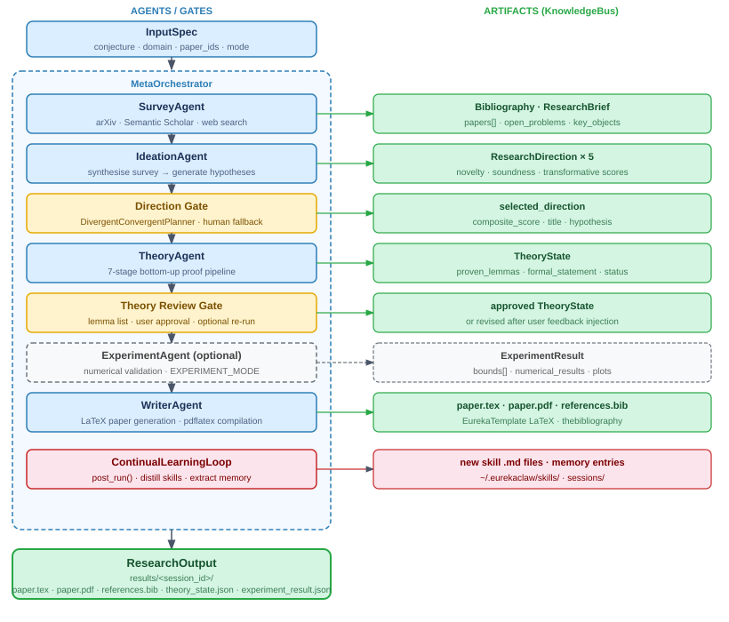
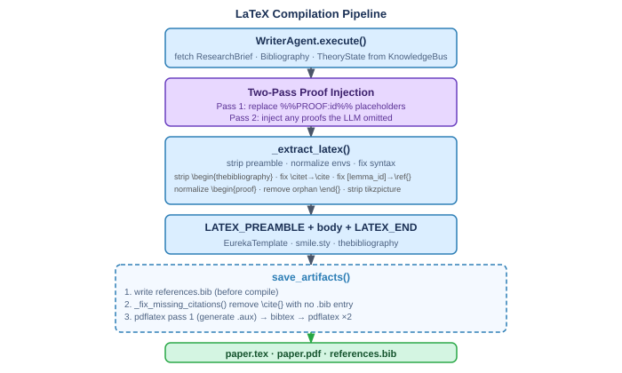

系统结构#
Overview#
EurekaClaw is organized as a multi-agent pipeline coordinated by a MetaOrchestrator. Each agent is specialized for one stage of the research lifecycle. Artifacts are shared between agents via a central KnowledgeBus.
Pipeline Stages#
{kind=link}

Core Components#
KnowledgeBus#
Central in-memory artifact store shared by all agents. All data flows through it — no agent holds private state between turns.
KnowledgeBus
├── ResearchBrief — survey findings, selected direction
├── TheoryState — proof state machine (lemma DAG, proofs, goals)
├── Bibliography — all papers found during survey
├── ExperimentResult — numerical validation results
└── TaskPipeline — current task execution plan
Artifacts are persisted to ~/.eurekaclaw/runs/<session_id>/ at the end of each session.
Agent Session & Context Compression#
Each agent maintains a conversation history (AgentSession) through its tool-use loop. To prevent unbounded context growth:
History is compressed every N turns (configurable via
CONTEXT_COMPRESS_AFTER_TURNS, default 6)A fast model summarizes the history into bullet points
The full conversation is replaced with the summary
Skill Injection#
Before each agent call, the SkillInjector retrieves the top-k most relevant skills from the skill bank and injects them into the system prompt as examples. This is the primary mechanism for cross-session learning.
Domain Plugin System#
Domain-specific behavior (tools, skills, workflow hints) is injected via DomainPlugin classes. The correct plugin is auto-detected from the domain string or conjecture keywords. See domains.md.
Data Models#
TheoryState — Proof State Machine#
TheoryState
├── informal_statement — plain-English conjecture
├── formal_statement — LaTeX-formalized theorem
├── known_results[] — KnownResult extracted from literature
├── research_gap — GapAnalyst's finding
├── proof_plan[] — ProofPlan (provenance: known/adapted/new)
├── lemma_dag{} — LemmaNode graph (dependencies)
├── proven_lemmas{} — lemma_id → ProofRecord
├── open_goals[] — remaining lemma_ids to prove
├── failed_attempts[] — FailedAttempt history
├── counterexamples[] — Counterexample discoveries
├── assembled_proof — final combined proof text
└── status — pending/in_progress/proved/refuted/abandoned
ResearchBrief — Planning State#
ResearchBrief
├── domain, query, conjecture
├── directions[] — ResearchDirection (scored 0-1)
│ ├── novelty_score
│ ├── soundness_score
│ ├── transformative_score
│ └── composite_score — weighted average
├── selected_direction — chosen after convergence
└── open_problems[], key_mathematical_objects[]
Theory Agent Inner Loop (7 Stages)#
The TheoryAgent runs a bottom-up proof pipeline implemented in inner_loop_yaml.py:
Stage |
Class |
Input |
Output |
|---|---|---|---|
1 |
|
Bibliography |
|
2 |
|
known_results + conjecture |
|
3 |
|
research_gap |
|
4 |
|
proof_plan, open_goals |
|
5 |
|
proven_lemmas |
|
6 |
|
assembled_proof |
|
7 |
|
full TheoryState |
consistency report |
The LemmaDeveloper runs its own inner loop per lemma:

LaTeX Compilation Pipeline#
{kind=link}

Direction Planning Fallback#
After the IdeationAgent runs, MetaOrchestrator._handle_direction_gate() calls DivergentConvergentPlanner.diverge() to generate 5 research directions. If the planner fails or returns an empty list (e.g. LLM parse error, API timeout), instead of silently proceeding with no direction the orchestrator halts and prompts the user:
Prints up to 5 open problems found by the survey as context.
Asks the user to type a hypothesis/direction manually.
Constructs a
ResearchDirectionfrom the input and writes it toResearchBrief.If the user enters nothing or presses Ctrl+C, raises
RuntimeErrorand the session exits cleanly.
This is implemented in _handle_manual_direction() in meta_orchestrator.py.
Theory Review Gate#
After the TheoryAgent completes and before the WriterAgent runs, the MetaOrchestrator executes the theory_review_gate orchestrator task. This gate is independent of gate_mode and always fires.
Flow:
GateController.theory_review_prompt()prints a numbered lemma list with✓ verified/~ low confidencetags for each proved lemma, plus any open goals.The user is asked: y (proceed) or n (flag the most problematic step).
On rejection:
User enters the lemma number (
L3) or ID, and a description of the logical gap.MetaOrchestrator._handle_theory_review_gate()finds the theory task, injects the feedback as[User feedback]: ..., resets it toPENDING, and re-runs the TheoryAgent once.After the revision, the updated sketch is shown again for a final look (no further retry).
On second rejection, the pipeline proceeds to the WriterAgent anyway with a warning.
Pause / Resume#
The TheoryAgent supports graceful pausing at stage boundaries via ProofCheckpoint (agents/theory/checkpoint.py).
Pause flow:
eurekaclaw pause <session_id>or Ctrl+C writes~/.eurekaclaw/sessions/<session_id>/pause.flag.At each stage boundary in
inner_loop_yaml._run_once(),ProofCheckpoint.is_pause_requested()is checked.When detected: clears the flag, saves
checkpoint.json(current stage + fullTheoryState), raisesProofPausedException.ProofPausedExceptionpropagates through both_run_onceandagent.py(explicit re-raise in bothexcept Exceptionhandlers).
Resume flow:
eurekaclaw resume <session_id>loadscheckpoint.json, reconstructsTheoryState, and re-runs the TheoryAgent starting at the saved stage.
Checkpoint file: ~/.eurekaclaw/sessions/<session_id>/checkpoint.json
Post-Run Learning#